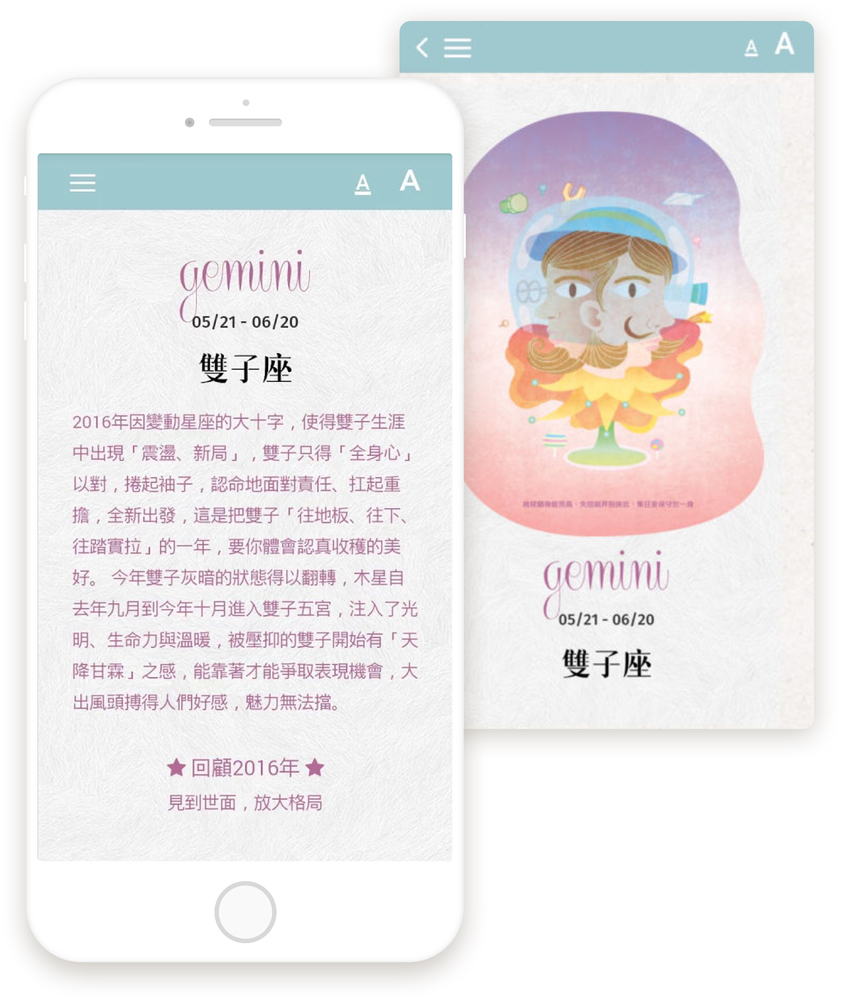

年度运势书第一品牌，华人界最具影响力占星专家。
25万字，深入你心灵，诠释你所经历，引导你即将面对：
25万字，深入你心灵，诠释你所经历，引导你即将面对：

随到随读，
运势书带着走
唐老师正式授权，2017 年必备运势大全，
电子书轻巧环保，走到哪看到哪！
常见问题
訂閱唐綺陽星座曆有什麼付款方式？
目前費用是透過 Apple Store 或 Google Play 代收，暫不支援其他的付款方式。我們將會陸續建立其他的付款方式，讓使用者都能更便利的使用。
試用版看不到月亮日轉換及新月祈願？
訂閱唐綺陽星座曆即可擁有這些功能囉！
為什麼在個人星盤中，我找不到出生地？
由於個人星盤中查詢城市是透過 Google 所提供的應用程式介面，但是大陸地區屏蔽了 Google 的服務，導致大陸的用戶無法使用這個功能。造成您的不便，還請您見諒。我們將會尋找替代方案儘快地解決這個問題。
怎麼關閉匯入 Facebook 的事件？
唐綺陽星座曆是取用系統可以讀到的行事曆，你可以用這個方式試著將 Facebook 行事曆關閉。
打開 iPhone 官方設定 > 郵件、聯絡資訊、行事曆 > 找出匯入 Facebook 行事曆帳號 > 進入將 Facebook 行事曆關閉即可。
每日星座運勢更新問題？
有時礙於唐老師行程繁忙，無法一次更新一週的的星座運勢。你可以嘗試在日顯示的界面中下拉更新，若有新的內容，我們都會立刻匯入。
在台灣以外的使用者可以使用嗎？
目前 iOS 與 Android 版本都支援全球下載。若您遇到時差的問題或是曆法的問題，請來信給客服，我們會儘量地排除您遇到的問題。
為什麼週末兩日的運勢一樣？
週六跟週日的運勢唐老師只會更新一次。
訂閱了一年份，但到期日沒有更新？
可能是您在購買時網路不穩定，造成我們這邊沒有收到您的購買記錄。請依照下列方式將購買的星座曆回復。
進入唐綺陽星座曆 > 按左上方選單 > 購買唐綺陽星座曆 > 登入 > 輸入您的帳號密碼
若您尚未註冊，麻煩您先註冊完帳號後，將帳號回報給我們，我們會立刻協助您將購買記錄回復。

口袋运势带着走